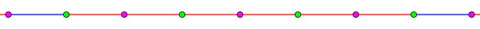

考虑一个圆，它的圆周被分成了 $N$ 等分，其中每段弧被染成了一种颜色 (为红色或蓝色)。定义一种染色方案是可生成 $S$ 的，如果它满足：
我们会在圆周上的 $N$ 个分割点中任取一个作为起始点。
然后，你需要对于这个给定的起点，进行 $M$ ($M = \left| S \right|$) 次移动。
每次移动只能把一个点移动到它两侧的点 (顺时针/逆时针) 之一，且必须进行。
于是，每次移动会扫过一段弧，我们将这段弧的颜色作为串 $T$ 的第 $i$ 个字符 —— 如果为红色，则为 $\texttt R$；如果为蓝色，则为 $\texttt B$。
对于每个起始点，你都需要找到一种合适的移动方向，使得最终得到的串 $T$ 恰好等于 $S$。
现在给定一个长度为 $M$ 的，由 R 和 B 构成的字符串 $S$。你需要求出，在 $2^N$ 种染色方案中，可生成 $S$ 的染色方案数模 $10^9 + 7$ 的结果。
注意染色方案是旋转、翻转不同构的 (即一共有 $2^N$ 种染色方案)。
第一行包含两个正整数 $N, M$ ($2 \leq N \leq 2 \times 10^5; 1 \leq M \leq 10^5$)，表示弧的段数和字符串 $S$ 的长度。
第二行包含一个由 R, B 构成的字符串 $S$ ($\left| S \right| = M$)，表示目标字符串。
输出一行一个整数，表示不同的可生成 $S$ 的方案数模 $10^9 + 7$ 的结果。
不妨设 $S_1 = \texttt R$。否则，将 $S$ 和对应染色方案取反 (即红变蓝，蓝变红)，对答案不影响。
于是，对于一个可生成 $S$ 的方案，不能存在两个相邻的蓝色弧。
否则，如果令起点为它们的中点，马上产生矛盾 (这个起点连第一个字符都满足不了)。
由上面的讨论知，整个圆周可以看成被蓝弧分隔的若干个红弧段，而每个红弧段分别包含 $r_1, r_2, \cdots, r_y$ ($r_i \geq 1$) 段红弧。
先考虑 $S$ 中有 $\texttt B$ 的情况 (否则 $S = \texttt R^M$，是单变量函数，容易讨论)，设第一个 $\texttt B$ 前有 $k$ 个 $\texttt R$。
考虑任意一个 $r_i$ (它们的定义是平等的)，首先，$r_i$ 不能为偶数。
如果 $r_i$ 为偶数，不失一般性，它的形态如下：
如果 $2 \mid k$，则将起点放到一个粉色点上，于是这 $k$ 个 $\texttt R$ 走完后，它还是会停留在某个粉色点上，于是下一个 $\texttt B$ 所需要的蓝色弧就不可能被扫过，矛盾。
如果 $2 \nmid k$，则将起点放到一个绿色点上，从而这 $k$ 个 $\texttt R$ 走完后，它又会停留在某个粉色点上，接下来的分析同上，矛盾。
于是 $r_i$ 为奇数，我们可以画出它的大概模样：
虽然这里 $r_i = 5$，但是下面我们的分析还是使用于所有奇数的。这里我们有一个假设：两个红蓝弧交点的颜色，左边是绿色，右边是粉色。
类似地，还是按照 $k$ 的奇偶性进行讨论：
如果 $2 \mid k$，那么将其放到红弧上最左边的粉色点，于是在 $k$ 轮后它会停留到一个粉色点上，从而只能是最右端的那个粉色点，从而必须有 $$ \color {teal} {r_i \leq k + 1} $$
如果 $2 \nmid k$，那么将其放到其中一个红蓝弧的交点，不妨设左边那个绿色的交点。
完全类似，在 $k$ 轮后它会停留到一个粉色点，那只能是最右端的粉色，于是有 $$ \color {teal} {r_i \leq k} $$
也就是说，对于第一段，设有 $k$ 个 $\texttt R$，则 $r_i$ 不超过「$\geq k$ 的最小奇数」。用位运算的角度来说，就是 $r_i \leq k \mid 1$ ($\mid$ 表示按位或)。
接下来，考虑字符串中相邻两个 $\texttt B$ 中的 $\texttt R$。
显然，如果这里的 $\texttt R$ 的个数为偶数，则可以忽略它，因为你只要走进来了，你就一定有方案 "原路返回"。
所以对于中间连续的 $\texttt R$ 段，只需考虑个数为奇数的情形。
注意到，对于一个给定的 (有解) 圈，只要起点固定了，那么对于字符串中的每个 $\texttt B$，穿过它的是哪一段弧，什么方向都是唯一确定的 (只需要注意到 $k_i$ 均为奇数)。
于是，中间这个连续的 $\texttt R$ 段，走到任意一个连续红弧段上，都是可能的。
由上分析知，$r_i$ 不能超过这个连续 $\texttt R$ 段的长度。
综上，对于 $\forall 1 \leq i \leq y$，$r_i$ 均为奇数，且不超过「$\geq$ "第一个连续 $\texttt R$ 段的 $\texttt R$ 个数" 的最小奇数」，且对于后面的每一个 (非结尾) 包含奇数个 $\texttt R$ 的连续 $\texttt R$ 段，$r_i$ 也不能超过它 (这个段的长度)。
这样，可以把串 $S$ 扫一遍，得到 $r_i$ 的一个上界 $B$，由于 $r_i$ 是奇数，因此我们可以令 $B$ 为奇数。
又每个红弧段上有奇数段红弧，且它们之间恰好隔着一个蓝弧，因此总的弧的段数 $N$ 必须是偶数 (从而可以特判掉 $2 \nmid N$ 的情形)。
我们在圈中随便固定一个起点，将圈扩展为链。由于 $S \neq \texttt R^M$，因此圈上至少有一段蓝弧。
因此，根据蓝弧在奇数位上还是在偶数位上，可以将整个方案分为两大类 (其中 "[" 表示起点)：
[RR|RR|RB|RR|RR|RR|RB|RB|RR|RB。[RR|BR|BR|RR|RR|BR|RR|RR|BR|RR。容易证明两种类型的总数是相等的，因此我们可以只计算一种类型的方案数，最后再 $\times 2$。
不妨设我们计算 RB 型。我们将 "RR" 作为一个整体，记作 $\texttt 1$，将 "RB" 作为一个整体，记作 $\texttt 0$。
于是问题就转化成了……
求出所有长度为 $\dfrac N2$ 的 $\texttt 0/\texttt 1$ 循环串中，有多少个串，满足任意一个长度为 $\dfrac {B + 1} 2$ 的子串 $s'$，不为全 $\texttt 1$ 串。
WTF？这不就是 [loj547]匹配字符串 然后套一个环吗？
那么先考虑链的情形。又 $N, M \leq 2 \times 10^5$，因此一波前缀和优化/递推式变形后容易 $O \left( N + M \right)$ 得到该数列的每一项。
那环怎么办？与 [loj6519]魔力环 类似，枚举第一个 $\texttt 0$ 前与最后一个 $\texttt 0$ 后的 $\texttt 1$ 的个数 $P$，然后将对应项 ($f_{N/2 - P}$) 乘上 $P$ 后相加即可 (本质就是一个卷积)。
于是我们就在 $O \left( N + M \right)$ 时间内解决了这个问题。
哦对了，别忘了 $S = \texttt R^M$ 的情形呢！
这个简单，我们直接转化原序列，就能对应到那道题 $m = 2$ 的情形，最后再成环。稍加推理可知，答案就是 Lucas 序列的第 $N$ 项 $L_N$。
总时间复杂度 $O \left( N + M \right)$。
#include <bits/stdc++.h>
typedef long long ll;
const int N = 100054, mod = 1000000007;
int n, m, L;
int f[N];
char s[N];
inline void down(int &x, const int y) {x > y ? x = y : 0;}
inline void add(int &x, const int y) {x += y - mod, x += x >> 31 & mod;}
inline void sub(int &x, const int y) {x -= y, x += x >> 31 & mod;}
int main() {
int i, j, u, v, ans = 0;
scanf("%d%d%s", &L, &n, s);
for (i = 0; i < n; ++i) s[i] = s[i] >> 4 & 1;
if (*s) for (i = 0; i < n; ++i) s[i] ^= 1;
for (j = 0; j < n && !s[j]; ++j);
if (j == n) {
for (u = 2, v = i = 1; i < L; ++i) j = u, u = v, add(v, j);
return printf("%d\n", v), 0;
}
if (L & 1) return putchar(48), putchar(10), 0;
m = j | 1, L /= 2;
for (i = j + 1; i < n; ++i) if (s[i]) (i ^ j) & 1 || (down(m, i - j - 1), 0), j = i;
assert(m & 1), m = (m + 1) / 2;
for (f[1] = *f = i = 1; i < L; ++i)
if (add(f[i + 1] = f[i], f[i]), i >= m) sub(f[i + 1], f[i - m]);
for (i = std::max(L - m, 0); i < L; ++i) ans = (ans + ll(L - i) * f[i]) % mod;
printf("%d\n", ans * 2 % mod);
return 0;
}
坑1：注意在中间的 $\texttt R$ 段中，只有长度为奇数的才能产生贡献，为偶数的再怎么短都没关系。
坑2：不要忘记最后将答案 $\times 2$。